Persek Kaya Yerleşke ve Kaya Mezarları (Asmalı Dere)
Kayseri’nin Tomarza ilçesi sınırları içerisinde yer alan Kapukaya köyü eski adı ile Persek köyü, kadim uygarlıklara uzun yıllar önce ev sahipliği yapmış. Ben de bu uygarlıklarının izlerinin peşine düştüm ve köy kahvehanesinde karşılaştığım Ali Osman Bey ile birlikte köylünün Asmalı Dere olarak adlandırdığı mevkiye kaya yerleşkeleri ve kaya mezarları incelemek üzere gittik.
Asmalı dere olarak adlandırılan alan aslında çok dar ve fazla derin olmayan bir vadi, vadinin içerisinde irili ufaklı çok sayıda insan oyması kaya yapılar bulunuyor. Bu yapılar arasında ağıllar, sarnıçlar, konutlar ve kaya mezarlar yer alıyor.
Benim en çok ilgimi çeken ve kadim uygarlıklarının izlerini taşıyan yapılar kaya mezarlar oldu. Kaya mezarların girişlerinin iki yanında vakti zamanında insan büstleri ve kitabeler yer alıyormuş. Bugün büstler maalesef tamamen parçalanmış durumda, kitabelerin ise bir kısmı duruyor. Kaya mezarların içerisinde U düzeninde ölü ve hediyelerin konulduğu sunaklar bulunuyor. İki katlı ve çok odalı kaya yapılar da gördük.
Bölge kültürel açıdan oldukça değerli bir mirasa sahip, buranın korunması ve sonraki nesillere en azından bu hali ile aktarılması son derece büyük öneme sahip.
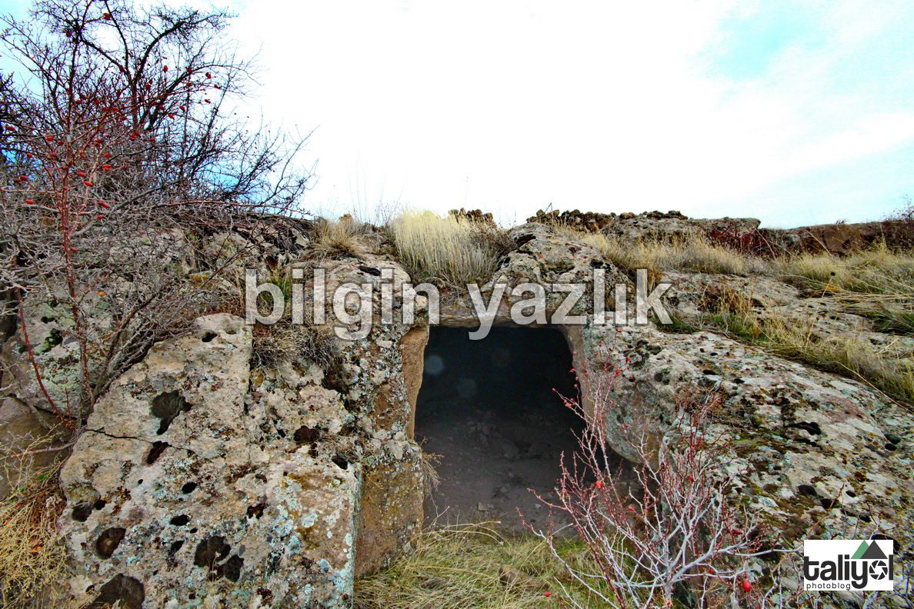
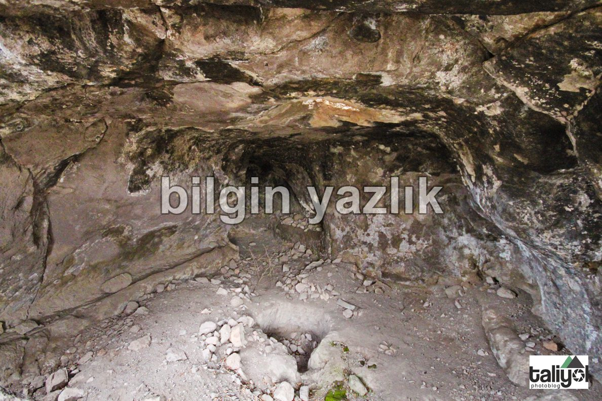
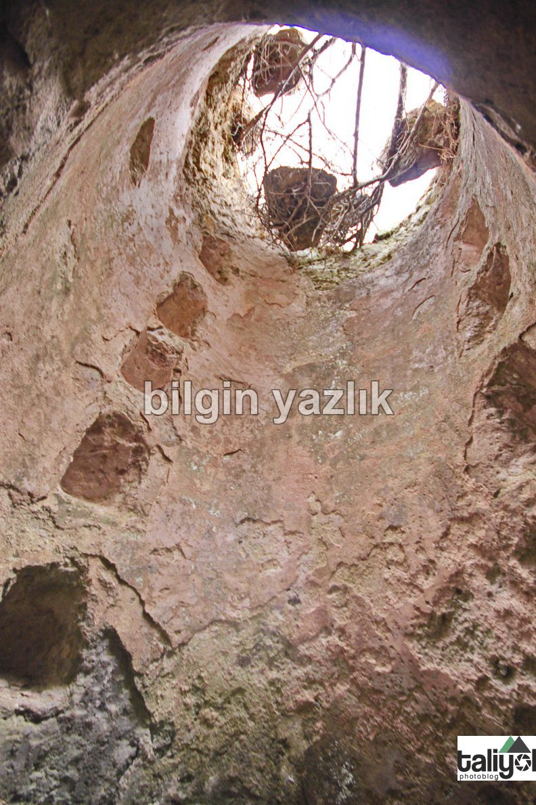
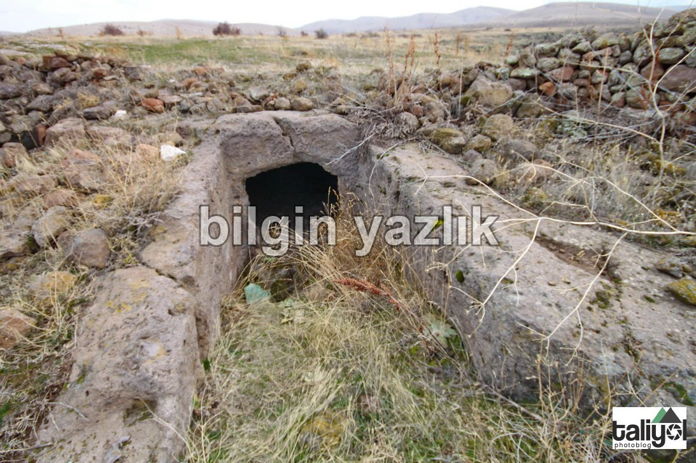
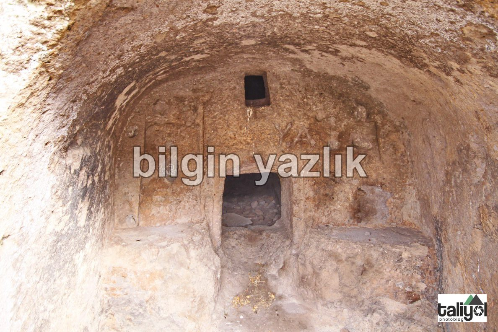
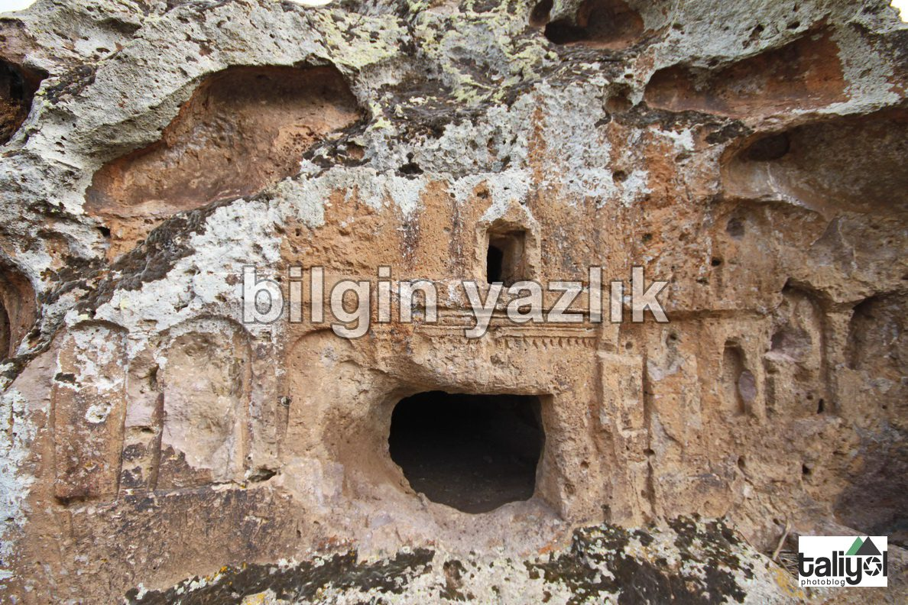
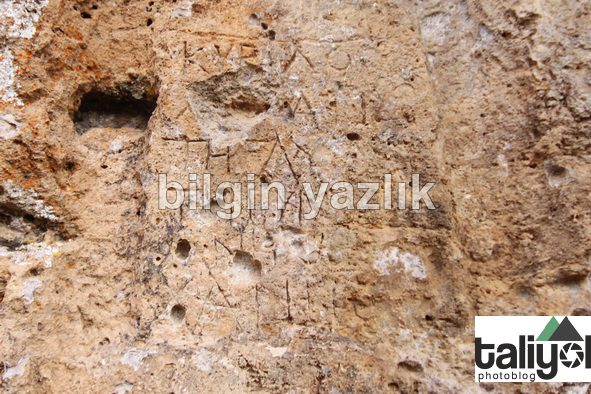
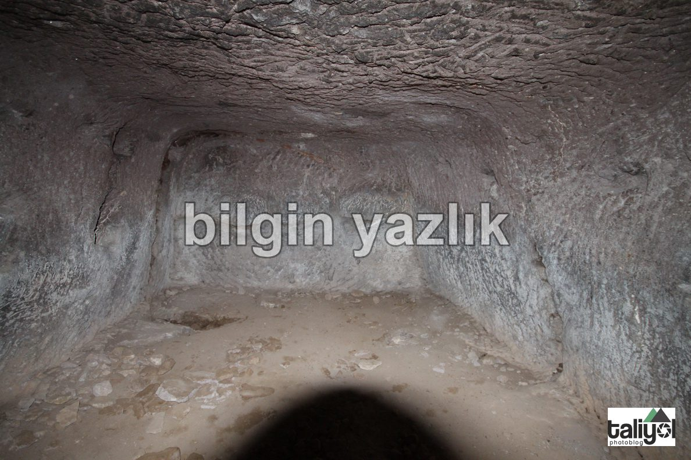
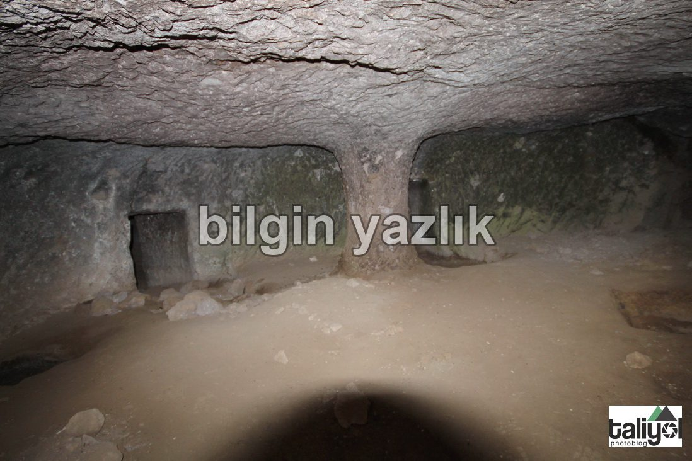
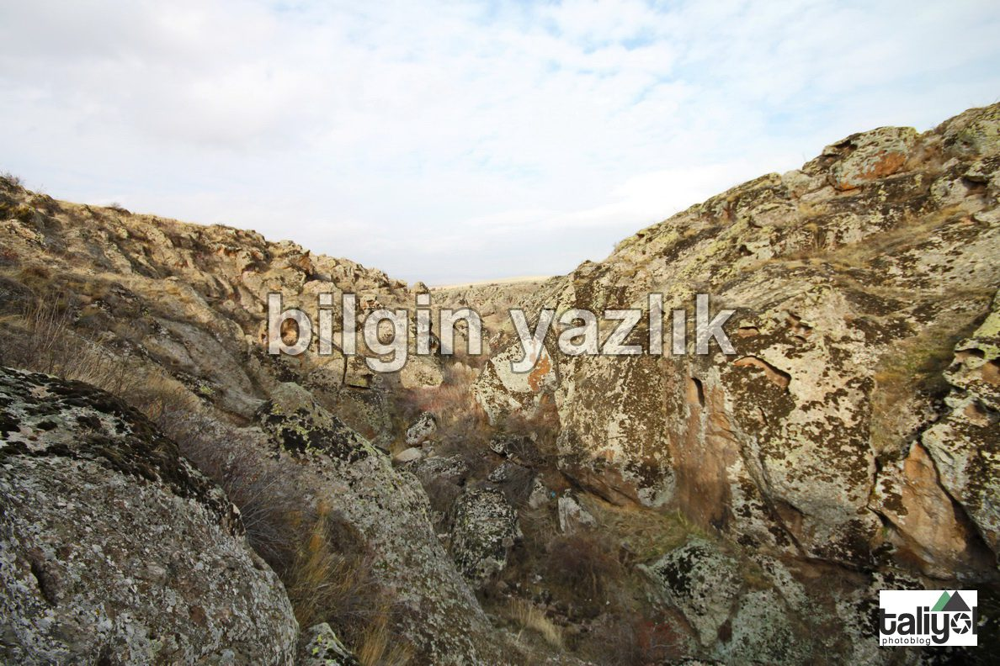
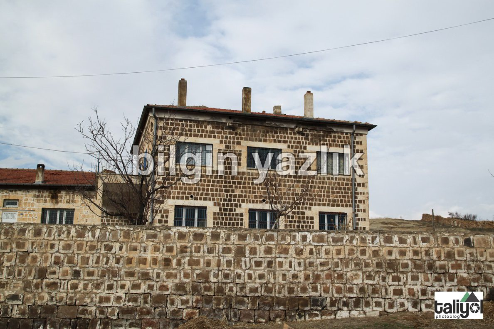
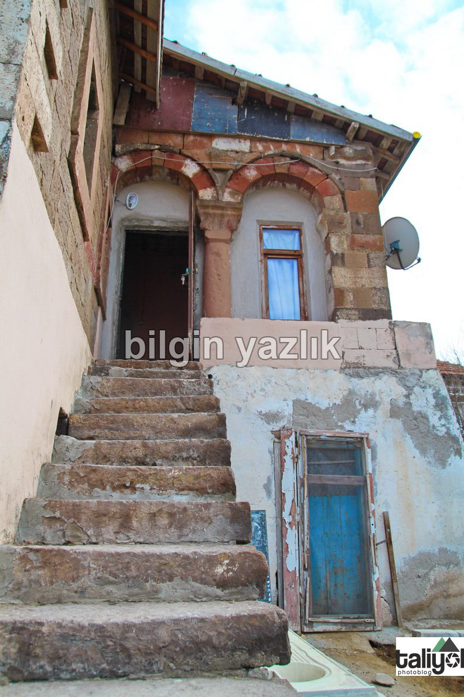
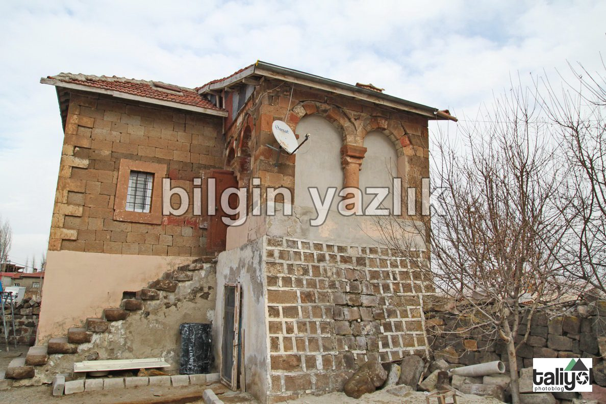
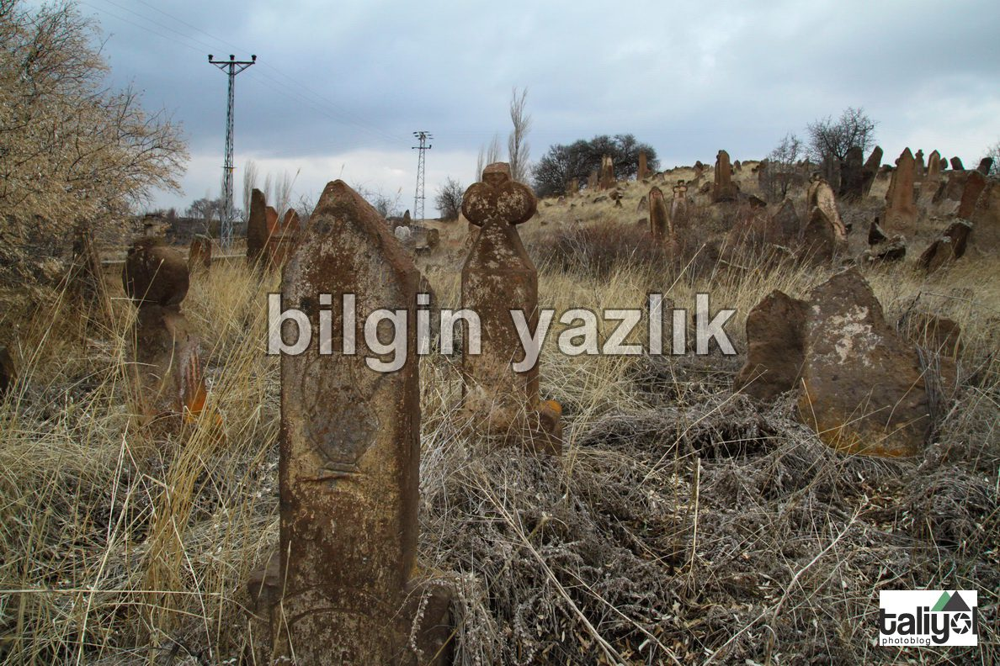
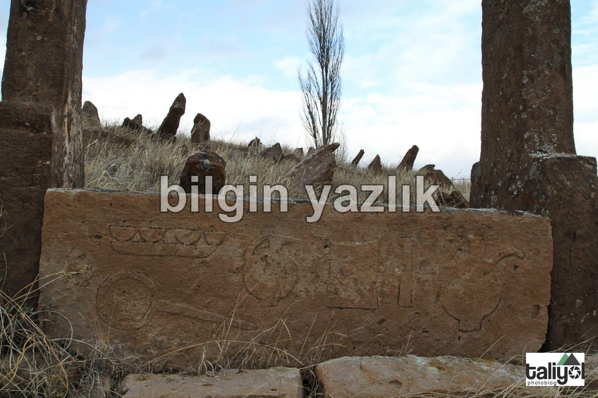
Bu yazı taliyol arşivinden taşınmıştır. · özgün kayıt